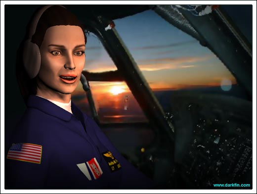
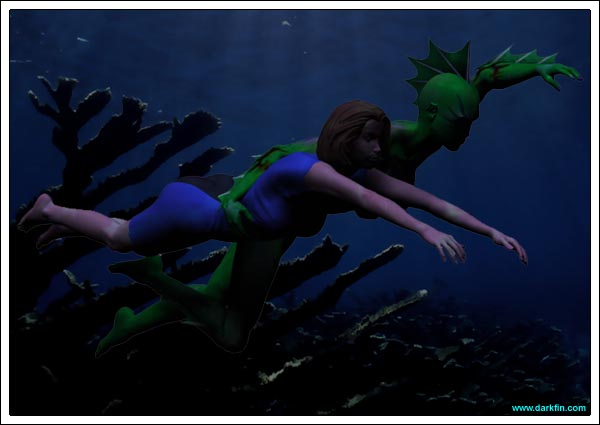
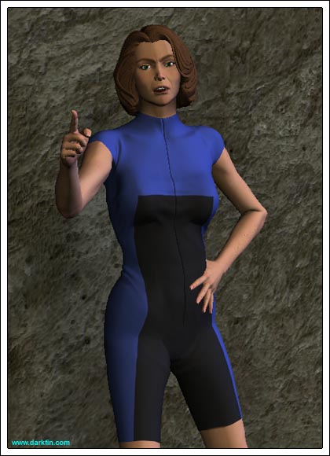
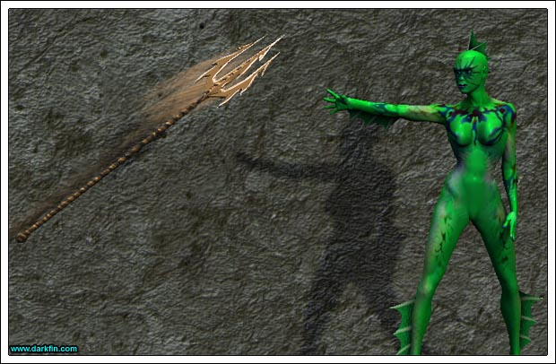
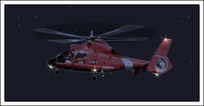
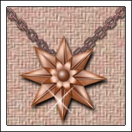

Craig Anita...
Anita NO
Craig You don't even know what I was going to say?
Anita Whenever you start a sentence with my first name in that annoying tight-ass tone of yours, it's never good
Craig Look, my commanding officer is starting to come down on me about these after-hour trips in the bird - I don't know how much longer I can spin it without him getting suspicious
Anita I'll get Sandy to say we're helping SCU with research - in a way, we are
Craig The cost of fuel for this guzzler is starting to outweigh "good relations" with the university - "hunting for Darkfin" is not going to cut it, we need something solid to show him or he's going to cut off our access altogether!
Anita It won't be much longer, I can FEEL it - these bizarre concussive waves that we've been picking up on the instruments are more than some random anomaly - Sandy says they're being emitted by some kind of sea creature, he's just not sure what it is
Craig And he's absolutely ruled out a horny dolphin?
Anita (Scowling at him) Yeah, I'm pretty sure he has!

Craig OK then, let's start in where we left off last time - head for sector six
Craig HEY
Anita (Winking) There's no reason we can't have a little fun while we're up here
Craig Speaking of fun, have you found a new playmate or are you still obsessing over that actress chick?
Anita Who says I can't do both?
Craig Ah
Anita There's just something about Jamie, I've been crushed out on her since I was a kid - I even bought "Tiger Beat" for her, man!
Craig I thought her name was Marcy?
Anita Oh yeah, that's her real name, but she'll always be "Jamie" to 99.99% of North America and overseas syndicated markets
Craig That's kind of sad when you think about it
Anita (Raising an eyebrow) Hmm, my mind is elsewhere
Craig Surprise
Anita What about you, Cap, did any of those yacht bimbos come through for you... pun intended?
Craig Ahehe... um - you could say that
Anita (Slapping him a high five) ALRIGHT, SCORE BABY - which one? - the short blonde with fake boobs?
Craig Nope
Anita The dyed redhead with fake teeth?
Craig Try again
Anita The white girl pretending to be black?
Craig Strike three!
Anita C'MON
Craig I'll give you a hint, she has an accent
Anita Oh God, you mean Ursula, aka MRS. MARTEL?
Craig BINGO
Anita That's just disgusting, Phelps!
Craig WHY? - she showed up at my place the other night with a bottle of champagne and wearing absolutely nothing under her fur coat... LIKE YOU'D EVER TURN THAT DOWN
Craig (Noticing) Uh-huh, that's what I thought
Anita BUT... SHE'S... MARRIED - Jesus, what is up with you and other men's wives? - first, it's my sister, now it's Martel's Yugo-trophy
Craig She came to ME, remember?
Anita Still, there are plenty of single girls out there, try to find ONE
Craig You mean, you've actually left some for me?
Anita (Patting his shoulder) You're not just my captain, you're also my friend
Craig Sector six, dead ahead!
Darkfin (Right arm wrapped around Morrigan's upper body) Because I will have to support your weight along with my own, I will not be traveling at my normal speed
Morrigan I'm still not quite sure how this is going to work - I mean, I DO know how to swim
Darkfin Yes, but you could never keep up with me, therefore, I need you to relax and follow my rhythm
Darkfin Do you know what a sine wave looks like?
Morrigan Are you speaking math to me? - DON'T
Darkfin (Blinking) Let me use another example... do you like Ribbon Candy?
Morrigan (Eyes lighting up) OH MY GOD, I LOVE RIBBON CANDY
Darkfin I have no Ribbon Candy for you - now that you have the appropriate mental image, I want you to envision us following that pattern when we swim
Morrigan Why didn't you just say "up and down?"
Darkfin Because, technically, it is not up and down - we will be arcing in precise intervals - intervals that are ten seconds apart, so you need to time your inhalation of air to exactly when we surface
Morrigan Basically, we're playing "Dolphin"
Darkfin That is another appropriate example - are you ready?
Morrigan I'm not saying this is going to happen or anything but what if, um, I lose my timing?
Darkfin Do not worry, I will know if you are in distress
Morrigan OK then, take me to your Fortress of Solitude!

Morrigan (Gasping a bit) That was fun
Darkfin For you
Darkfin (Watching her) Looking for something?
Morrigan Huh? - sorry, just searching for animatronic pirates
Darkfin (Going over to her computer) We need to begin the tests
Morrigan I suppose you don't have any potato chips around here?
Darkfin Only squid in the livewell
Morrigan (Arms folded) It's not quite the same without pesto sauce... and deep frying - so, what shall I call you - Aleta Oscura... Fish Stick... Finny Fin Fin?
Darkfin The Anglo consensus seems to be "Darkfin"
Morrigan But what do the Danes and Jutes prefer?
Darkfin (Preparing several syringes) What is behind the wall of sarcasm?
Morrigan No one has ever scaled it before - SCALED, ha
Morrigan Well, if someone does succeed in scaling the wall, then they have to cross the Moat of Suspicious Animosity and conquer the Castle of Quiet Despair
Darkfin That does not sound so difficult
Morrigan Be on the lookout for trolls
Darkfin Please come here and sit down
Morrigan (Eying the expensive lab equipment) I would like to know how you got all of this stuff here... did the mothership beam it down?
Darkfin (Checking the woman's body temperature) I have my ways
Darkfin (Looking in a microscope) Please do not touch anything
Darkfin That jar used to contain turtle urine
Morrigan Can I ask you a question?
Darkfin (Jotting down some notes) You can try
Morrigan Why don't you have gills?
Darkfin My lungs can adapt to an aqueous medium for breathing
Morrigan Sort of like a baby in a womb?
Darkfin Not quite
Morrigan Does this mean you're natural or man-made?
Darkfin I prefer the term "enhanced"
Morrigan (Scoffing) Oh, brother!
Darkfin I need you to unzip your suit
Morrigan (Nervous) Umm, why?
Darkfin I would like to listen to your heart
Morrigan (Acquiescent) Fine
Darkfin (Absently tracing it with her finger) How did you get this?

Morrigan (Slapping her hand away) I'VE HAD ENOUGH OF THIS FOR ONE DAY - TAKE ME HOME
Darkfin I deeply apologize for any perceived inappropriateness, I just need to know as much as I can
Morrigan You know FAR more than I do - how do you know I won't come back here with a fleet of Navy ships?
Darkfin You have yet to return to the Kiyomi caves with a battalion of Army tanks
Morrigan (Pacing) You know, you think you're some kind of key source for me - sorry, you're nothing but a key source of insanity... and a killer no less!
Morrigan If I gave you up, this would be the story to put me behind Tom Brokaw's anchor desk, yet, I come here and let you draw blood from me - how do I even know you're drawing blood? - maybe you're implanting me with your anchovy fish babies
Morrigan Wow, you just smiled - there IS some human in you!
Darkfin Not that much
Morrigan Enough to be a 36C cup
Darkfin (Going over to her side) Jealous?
Morrigan Maybe
Morrigan Blame your mother's gene for that - but be grateful that she passed on something better to you
Morrigan What are you talking about?
Morrigan That's a beautiful bracelet - may I?
Darkfin (Quickly stashing it away) NO... that is not what I have come to show you
Morrigan Where did you get this book?
Darkfin (Flipping through the pages) It was passed on to me
Morrigan (Trying to recognize the writing) Is that Sanskrit?
Darkfin A form of it
Morrigan How old is this book?
Darkfin Older than Duquesa Bay
Morrigan (Instantly recognizing the symbol) That's the mark on the bottom of my foot! - I don't understand?
Darkfin (Suddenly closing the book) You will... each piece of the puzzle at a time
Morrigan NO, DAMMIT, YOU TELL ME EVERYTHING YOU KNOW, RIGHT NOW - I AM SICK AND TIRED OF ALL THIS MYSTERY SHIT - I'VE HAD IT WITH FISH WOMEN AND WEIRDOS IN BATHROBES... SAY SOMETHING
Darkfin Nereidium
Morrigan Excuse me?

Morrigan I was wondering what happened to your pretty swizzle stick
Darkfin Nereidium is what this is made of - it is what the clasp of the Duquesa's Tears is made of... it is the metal of your mark, the metal in your blood
Morrigan (Trying to think) Wait a minute, wait a minute... WHAT?
Morrigan (Noticing) Are you alright?
Darkfin (Rubbing her head) You have learned enough for tonight, I must take you back
Morrigan I'll go, but I need something from you, first
Darkfin You are in no position to make demands of me
Morrigan (Going up to Darkfin and pointing her finger into her chest) I think I am - it's time for YOU to start helping ME when I ask for it
Darkfin (Eyes blazing) Do not poke me!
Morrigan You're lucky I don't cover you in tarter sauce and call you dinner!
Darkfin (Stepping towards her) Care to swim home alone?
Morrigan (Stepping back) I could
Darkfin Good luck with the sharks
Darkfin (Softening her tone) What exactly do you need my help with?
Morrigan Research on a story
Darkfin And what do I have to do?
Morrigan Help me break into an office
Darkfin You cannot do this alone?
Morrigan (Half smile) It would be a lot easier with your help - you can scale walls, I know it
Darkfin Which office?
Morrigan Meeramar Shipping - specifically, Griffin Martel of the PCOC
Erika (Thinking for a moment) When?
Morrigan I'll send you an IM
Darkfin Time to go
Morrigan What's going on?
Darkfin (Sensing a fishing boat a few miles away) Someone has decided to use illegal tuna nets again - three dolphins are tangled... I will be back for you shortly
Morrigan WAIT
Morrigan Set the dolphins free but don't kill the fishermen - a slight maiming, maybe, but please no murdering tonight!
Morrigan (Looking up) THAT'S JUST GREAT

Craig I'm getting tired, Fiore, let's pack it in
Anita I'll turn around at the marker buoy and we'll call it a night
Anita (Throwing off her goggles) Aim the light on the buoy and hand me the binos, quick!
Craig (Doing so) What do you see?
Anita (Looking) I'm not sure, I need to get closer
Craig It's probably just a seal
Anita AY, DE MI
Anita IT'S MCBRIDE
Craig (Grabbing the binoculars) WHAT? - IS SHE INSANE?
Anita SHE KNOWS SOMETHING, SHE KNOWS SOMETHING
Craig MS. MCBRIDE, PLEASE CLIMB UP... NOW
Craig (Handing her a blanket) What on earth are you doing out here this late? - do you know how cold the water is?
Anita (Staring at her unzipped wetsuit) I think it's pretty obvious she knows how cold it is
Morrigan (Glaring at Anita) I'm on an impromptu scuba dive
Anita Where's your tank? - how come you only have a bra and panties on under the wetsuit instead of a regular bikini?
Morrigan (Zipping her suit up) How kind of you to notice... I said it was impromptu - besides, I'm in International Waters, I can do whatever I want!
Anita WRONG - IW is another 10 miles out and you're sitting on USCG property
Morrigan Fine, if you're going to arrest me, you need to arrest the dozens of sea lions that also sit on your precious property
Craig Tell us what you're doing out here and we'll let you go
Anita (Snarling back at Morrigan) SHE'S OUT HERE, ISN'T SHE?
Morrigan (Casually looking at one of their maps) I have no idea who you're talking about, lieutenant
Anita (Snatching the map out of Morrigan's hand) I should push you out that door right now and use you as bait!
Morrigan (Getting up) That's fine by me, I have better things to do than sit here with you two!
Craig (Stopping her) HOLD IT, HOLD IT, EVERYONE JUST STAY SEATED AND CALM DOWN... Anita, head for the ship - Ms. McBride, I highly suggest you explain to me what you are doing out here or I could get you in a lot of trouble you don't need
Morrigan And I could get you in a lot of bad publicity YOU don't need - I'm researching a story on illegal night fishing and how the Coast Guard is seriously LAGGING on the job

Morrigan (Letting out a sigh of relief) Satisfied now?
Anita (Shaking her finger back at Morrigan) NUNCA... NEVER
Morrigan WHERE DID YOU GET THIS?
Anita It's a family heirloom... why?
Morrigan (Now nonchalant) It's... it's very beautiful
Anita (Suspicious) Thank you
Craig FIORE, STOP CHATTING LIKE A GIRL AND HOLD THIS BIRD STEADY, I'M READY TO GO DOWN ON DECK
Anita (Turning back to her duties) Yes, captain